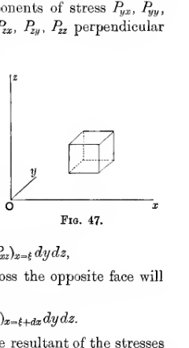
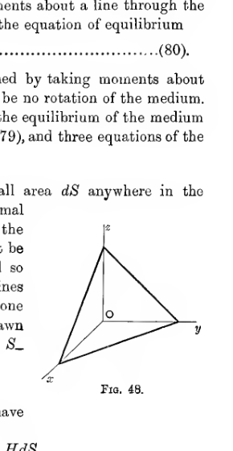
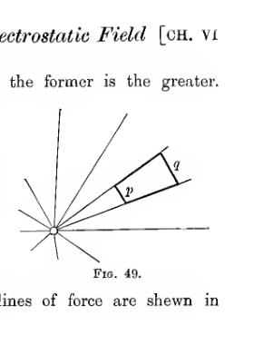
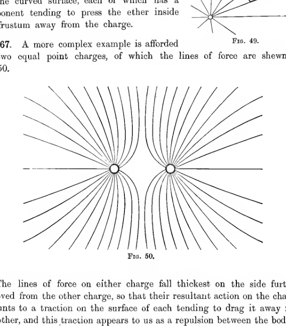
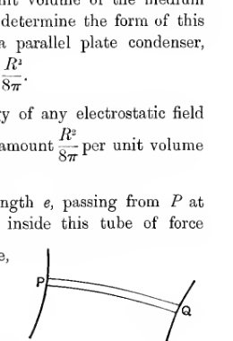
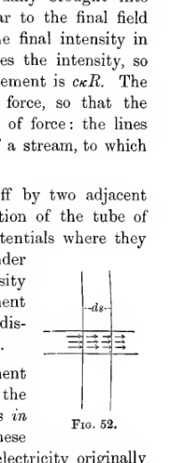

Chapter VI#
The State of the Medium in the Electrostatic Field#
153. The whole electrostatic theory has so far been based simply upon Coulomb’s Law of the inverse square of the distance. We have supposed that one charge of electricity exerts certain forces upon a second distant charge, but nothing has been said as to the mechanism by which this action takes place. In handling this question there are two possibilities open. We may either assume “action at a distance” as an ultimate explanation - i.e. simply assert that two bodies act on one another across the intervening space, without attempting to go any further towards an explanation of how such action is brought about - or we may tentatively assume that some medium connects the one body with the other, and examine whether it is possible to ascribe properties to this medium, such that the observed action will be transmitted by the medium. Faraday, in company with almost all other great natural philosophers, definitely refused to admit “action at a distance” as an ultimate explanation of electric phenomena, finding such action unthinkable unless transmitted by an intervening medium.
154. It is worth enquiring whether there is any valid a priori argument which compels us to resort to action through a medium. Some writers have attempted to use the phenomenon of Inductive Capacity to prove that the energy of a condenser must reside in the space between the charged plates, rather than on the plates themselves - for, they say, change the medium between the plates, keeping the plates in the same condition, and the energy is changed. A study of Faraday’s molecular explanation of the action in a dielectric will shew that this argument proves nothing as to the real question at issue. It goes so far as to prove that when there are molecules placed between electric charges, these molecules themselves acquire charges, and so may be said to be new stores of energy, but it leaves untouched the question of whether the energy resides in the charges on the molecules or in the ether between them.
Again, the phenomenon of induction is sometimes quoted against action at a distance - a small conductor placed at a point \(P\) in an electrostatic field shews phenomena which depend on the electric intensity at \(P\). This is taken to shew that the state of the ether at the point \(P\) before the introduction of the conductor was in some way different from what it would have been if there had not been electric charges in the neighbourhood, and this can be explained equally well either by action at a distance or action through a medium. The new conductor is a collection of positive and negative charges: the phenomena under question are produced by these charges being acted upon by the other charges in the field, but whether this action is action at a distance or action through a medium cannot be told.
Indeed, it will be seen that, viewed in the light of the electron-theory and of Faraday’s theory of dielectric polarisation, electrical action stands on just the same level as gravitational action. In each case the system of forces to be explained may be regarded as a system of forces between indestructible centres, whether of electricity or of matter, and the law of force is the law of the inverse square, independently of the state of the space between the centres. And although scientists may be said to be agreed that gravitational action, as well as electrical action, is in point of fact propagated through a medium, yet a consideration of the case of gravitational forces will shew that there is no obvious a priori argument which can be used to disprove action at a distance.
Failing an a priori argument, an attempt may be made to disprove action at a distance, or rather to make it improbable, by an appeal to experience. It may be argued that as all the forces of which we have experience in every-day life are forces between substances in contact, therefore it follows by analogy that forces of gravitation, electricity and magnetism, must ultimately reduce to forces between substances in contact - i.e. must be transmitted through a medium. Upon analysis, however, it will be seen that this argument divides all forces into two classes:
Forces of gravitation, electricity and magnetism, which appear to act at a distance.
Forces of pressure and impact between solid bodies, hydrostatic pressure, etc. which appear to act through a medium.
The argument is now seen to be that because class (2) appear to act through a medium, therefore class (1) must in reality act through a medium. The argument could, with equal logical force, be used in the exactly opposite direction: indeed it has been so used by the followers of Boscovitch. The Newtonian discovery of gravitation, and of apparent action at a distance, so occupied the attention of scientists at the time of Boscovitch that it seemed natural to regard action at a distance as the ultimate basis of force, and to try to interpret action through a medium in terms of action at a distance. The reversion from this view came, as has been said, with Faraday.
Hertz’s subsequent discovery of the finite velocity of propagation of electric action, which had previously been predicted by Maxwell’s theory, came to the support of Faraday’s view. To see exactly what is meant by this finite velocity of propagation, let us imagine that we place two uncharged conductors \(A, B\) at a distance \(r\) from one another. By charging \(A\), and so performing work at \(A\), we can induce charges on conductor \(B\), and when this has been done, there will be an attraction between conductors \(A\) and \(B\). We can suppose that conductor \(A\) is held fast, and that conductor \(B\) is allowed to move towards \(A\), work being performed by the attraction from conductor \(A\). We are now recovering from \(B\) work which was originally performed at \(A\). The experiments of Hertz shew that a finite time is required before any of the work spent on \(A\) becomes available at \(B\). A natural explanation is to suppose that work spent on \(A\) assumes the form of energy which spreads itself out through the whole of space, and that the finite time observed before energy becomes available at \(B\) is the time required for the first part of the advancing energy to travel from \(A\) to \(B\). This explanation involves regarding energy as a definite physical entity, capable of being localised in space. It ought to be noticed that our senses give us no knowledge of energy as a physical entity: we experience force, not energy. And the fact that energy appears to be propagated through space with finite velocity does not justify us in concluding that it has a real physical existence, for, as we shall see, the potential appears to be propagated in the same way, and the potential can only be regarded as a convenient mathematical fiction.
155. We accordingly make the tentative hypothesis that all electric action can be referred to the action of an intervening medium, and we have to examine what properties must be ascribed to the medium. If it is found that contradictory properties would have to be ascribed to the medium, then the hypothesis of action through an intervening medium will have to be abandoned. If the properties are found to be consistent, then the hypotheses of action at a distance and action through a medium are still both in the field, but the latter becomes more or less probable just in proportion as the properties of the hypothetical medium seem probable or improbable.
Later, we shall have to conduct a similar enquiry with respect to the system of forces which two currents of electricity are found to exert on one another. It will then be found that the law of force required for action at a distance is an extremely improbable law, while the properties of a medium required to explain the action appear to be very natural, and therefore, in our sense, probable.
156. Since electric action takes place even across the most complete vacuum obtainable, we conclude that if this action is transmitted by a medium, this medium must be the ether. Assuming that the action is transmitted by the ether, we must suppose that at any point in the electrostatic field there will be an action and reaction between the two parts of the ether at opposite sides of the point. The ether, in other words, is in a state of stress at every point in the electrostatic field. Before discussing the particular system of stresses appropriate to an electrostatic field, we shall investigate the general theory of stresses in a medium at rest.
General Theory of Stresses in a Medium at Rest#
157. Let us take a small area \(dS\) in the medium perpendicular to the axis of \(x\). Let us speak of that part of the medium near to \(dS\) for which \(x\) is greater than its value over \(dS\) as \(x_+\), and that for which \(x\) is less than this value as \(x_-\), so that the area \(dS\) separates the two regions \(x_+\) and \(x_-\). Those parts of the medium by which these two regions are occupied exert forces upon one another across \(dS\), and this system of forces is spoken of as the stress across \(dS\). Obviously this stress will consist of an action and reaction, the two being equal and opposite. Also it is clear that the amount of this stress will be proportional to \(dS\), so that if the force exerted by \(x_+\) on \(x_-\) has components
then the force exerted by \(x_-\) on \(x_+\) will have components
The quantities \(P_{xx}, P_{xy}, P_{xz}\) are spoken of as the components of stress perpendicular to \(Ox\). Similarly there will be components of stress \(P_{yx}, P_{yy}, P_{yz}\) perpendicular to \(Oy\), and components of stress \(P_{zx}, P_{zy}, P_{zz}\) perpendicular to \(Oz\).
Let us next take a small parallelepiped in the medium, bounded by planes
The stress acting upon the parallelepiped across the face of area \(dydz\) in the plane \(x = \xi\) will have components
while the stress acting upon the parallelepiped across the opposite face will have components
Compounding these two stresses, we find that the resultant of the stresses acting upon the parallelepiped across the pair of faces parallel to the plane of \(yz\), has components
Similarly from the other pairs of faces, we get resultant forces of components
and
For generality, let us suppose that in addition to the action of these stresses, the medium is acted upon by forces acting from a distance, of amount \(\Xi, H, Z\) per unit volume. The components of the forces acting on the parallelepiped of volume \(dxdydz\) will be
Compounding all the forces which have been obtained, we obtain as equations of equilibrium
and two similar equations.

A small rectangular parallelepiped is shown near the coordinate axes \(x\), \(y\), and \(z\). The figure identifies the infinitesimal volume element used to derive the balance of stress components in a medium at rest.
158. These three equations ensure that the medium shall have no motion of translation, but for equilibrium it is also necessary that there should be no rotation. To a first approximation, the stress across any face may be supposed to act at the centre of the face, and the force \(\Xi, H, Z\) at the centre of the parallelepiped. Taking moments about a line through the centre parallel to the axis of \(Ox\), we obtain as the equation of equilibrium
This and the two similar equations obtained by taking moments about lines parallel to \(Oy, Oz\) ensure that there shall be no rotation of the medium. Thus the necessary and sufficient condition for the equilibrium of the medium is expressed by three equations of the form of (79), and three equations of the form of (80).
159. Suppose next that we take a small area \(dS\) anywhere in the medium. Let the direction cosines of the normal to \(dS\) be \(\pm l, \pm m, \pm n\). Let the parts of the medium close to \(dS\) and on the two sides of it be spoken of as \(S_+\) and \(S_-\), these being named so that a line drawn from \(dS\) with direction cosines \(+l, +m, +n\) will be drawn into \(S_+\), and one with direction cosines \(-l, -m, -n\) will be drawn into \(S_-\). Let the force exerted by \(S_+\) on \(S_-\) across the area \(dS\) have components
then the force exerted by \(S_-\) on \(S_+\) will have components
The quantities \(F, G, H\) are spoken of as the components of stress across a plane of direction cosines \(l, m, n\).
To find the values of \(F, G, H\), let us draw a small tetrahedron having three faces parallel to the coordinate planes and a fourth having direction cosines \(l, m, n\). If \(dS\) is the area of the last face, the areas of the other faces are \(l dS, m dS, n dS\) and the volume of the tetrahedron is \(\tfrac13 \sqrt{2lmn}\,(dS)^{3/2}\). Resolving parallel to \(Ox\), we have, since the medium inside this tetrahedron is in equilibrium,
giving, since \(dS\) is supposed vanishingly small,
and there are two similar equations to determine \(G\) and \(H\).

A tetrahedron is placed against the coordinate axes, with one oblique face labelled by its orientation. The diagram represents the inclined plane across which the general stress components \(F\), \(G\), and \(H\) are resolved.
160. Assuming that equation (80) and the two similar equations are satisfied, the normal component of stress across the plane of which the direction cosines are \(l, m, n\) is
The quadric
is called the stress-quadric. If \(r\) is the length of its radius vector drawn in the direction \(l, m, n\), we have
It is now clear that the normal stress across any plane \(l, m, n\) is measured by the reciprocal of the square of the radius vector of which the direction cosines are \(l, m, n\). Moreover the direction of the stress across any plane \(l, m, n\) is that of the normal to the stress-quadric at the extremity of this radius vector. For \(r\) being the length of this radius vector, the coordinates of its extremity will be \(rl, rm, rn\). The direction cosines of the normal at this point are in the ratio
or \(F : G : H\), which proves the result.
The stress-quadric has three principal axes, and the directions of these are spoken of as the axes of the stress. Thus the stress at any point has three axes, and these are always at right angles to one another. If a small area be taken perpendicular to a stress axis at any point, the stress across this area will be normal to the area. If the amounts of these stresses are \(P_1, P_2, P_3\), then the equation of the stress-quadric referred to its principal axes will be
Clearly a positive principal stress is a simple tension, and a negative principal stress is a simple pressure.
As simple illustrations of this theory, it may be noticed that:
For a simple hydrostatic pressure \(P\), the stress-quadric becomes an imaginary sphere
The pressure is the same in all directions, and the pressure across any plane is at right angles to the plane.
For a simple pull, as in a rope, the stress-quadric degenerates into two parallel planes
The Stresses in an Electrostatic Field#
161. If an infinitesimal charged particle is introduced into the electric field at any point, the phenomena exhibited by it must, on the present view of electric action, depend solely on the state of stress at the point. The phenomena must therefore be deducible from a knowledge of the stress-quadric at the point. The only phenomenon observed is a mechanical force tending to drag the particle in a certain direction - namely, in the direction of the line of force through the point. Thus from inspection of the stress-quadric, it must be possible to single out this one direction. We conclude that the stress-quadric must be a surface of revolution, having this direction for its axis. The equation of the stress-quadric at any point, referred to its principal axes, must accordingly be
where the axis of \(\xi\) coincides with the line of force through the point. Thus the system of stresses must consist of a tension \(P_1\) along the lines of force, and a tension \(P_2\) perpendicular to the lines of force - and if either of the quantities \(P_1\) or \(P_2\) is found to be negative, the tension must be interpreted as a pressure.
Since the electrical phenomena at any point depend only on the stress-quadric, it follows that \(R\) must be deducible from a knowledge of \(P_1\) and \(P_2\). Moreover, the only phenomena known are those which depend on the magnitude of \(R\), so that it is reasonable to suppose that the only quantity which can be deduced from a knowledge of \(P_1\) and \(P_2\) is the quantity \(R\) - in other words, that \(P_1\) and \(P_2\) are functions of \(R\) only. We shall for the present assume this as a provisional hypothesis, to be rejected if it is found to be incapable of explaining the facts.
162. The expression of \(P_1\) as a function of \(R\) can be obtained at once by considering the forces acting on a charged conductor. Any element \(dS\) of surface experiences a force \(R^2 dS / 8\pi\) urging it normally away from the conductor. On the present view of the origin of the forces in the electric field, we must interpret this force as the resultant of the ether-stresses on its two sides. Thus, resolving normally to the conductor, we must have
where \((P_1)_R, (P_1)_0\) denote the values of \(P_1\) when the intensity is \(R\) and \(0\) respectively. Inside the conductor there is no intensity, so that the stress-quadrics become spheres, for there is nothing to differentiate one direction from another. Any value which \((P_1)_0\) may have accordingly arises simply from a hydrostatic pressure or tension throughout the medium, and this cannot influence the forces on conductors. Leaving any such hydrostatic pressure out of account, we may take \((P_1)_0 = 0\), and so obtain \((P_1)_R\) in the form
163. We can most easily arrive at the function of \(R\) which must be taken to express the value of \(P_2\), by considering a special case.
Consider a spherical condenser formed of spheres of radii \(a, b\). If this condenser is cut into two equal halves by a plane through its centre, the two halves will repel one another. This action must now be ascribed to the stresses in the medium across the plane of section. Since the lines of force are radial these stresses are perpendicular to the lines of force, and we see at once that the stress perpendicular to the lines of force is a pressure. To calculate the function of \(R\) which expresses this pressure, we may suppose \(b-a\) equal to some very small quantity \(c\), so that \(R\) may be regarded as constant along the length of a line of force. The area over which this pressure acts is \(\pi(b^2-a^2)\), and since the pressure per unit area in the medium perpendicular to a line of force is \(-P_2\), the total repulsion between the two halves of the condenser will be \(-P_2 \pi(b^2-a^2)\).
The whole force on either half of the condenser is however a force \(2\pi\sigma^2\) per unit area over each hemisphere, normal to its surface. The resultant of all the forces acting on the inner hemisphere is \(\pi a^2 \times 2\pi\sigma^2\), or, putting \(2\pi a^2 \sigma = E\), so that \(E\) is the charge on either hemisphere, this force is \(E^2 / 2a^2b\). Similarly, the force on the hemisphere of radius \(b\) is \(E^2 / 2b^2\). Thus the resultant repulsion on the complete half of the condenser is \(\tfrac12 E^2\left(\frac{1}{a^2} - \frac{1}{b^2}\right)\). Since this has been seen to be also equal to \(-P_2\pi(b^2-a^2)\), we have
on taking \(a=b\) in the limit.
Thus in order that the observed actions may be accounted for, it is necessary that we have
Moreover, if these stresses exist, they will account for all the observed mechanical action on conductors, for the stresses result in a mechanical force \(2\pi\sigma^2\) per unit area on the surface of every conductor.
164. It remains to examine whether these stresses are such as can be transmitted by an ether at rest.
As a preliminary we must find the values of the stress-components \(P_{xx}, P_{xy}, \ldots\) referred to fixed axes \(Ox, Oy, Oz\).
The stress-quadric at any point in the ether, referred to its principal axes, is seen on comparison with equation (83) to be
Here the axis of \(\xi\) is in the direction of the line of force at the point. Let the direction-cosines of this direction be \(l_1, m_1, n_1\). Then on transforming to axes \(Ox, Oy, Oz\) we may replace \(\xi\) by \(l_1 x + m_1 y + n_1 z\).
Equation (85) may be replaced by
and on transforming axes \(\xi^2 + \eta^2 + \zeta^2\) transforms into \(x^2 + y^2 + z^2\). Thus the transformed equation of the stress-quadric is
Comparing with equation (82), we obtain
and similar values for the remaining components of stress.
Or again, since
these equations may be expressed in the form
In this system of stress-components, the relations \(P_{xy} = P_{yx}\) are satisfied, as of course they must be since the system of stresses has been derived by assuming the existence of a stress-quadric. Thus the stresses do not set up rotations in the ether.
In order that there may be also no tendency to translation, the stress-components must satisfy equations of the type
expressing that no forces beyond these stresses are required to keep the ether at rest.
165. On substituting the values of the stress-components, we have
On putting
we find at once that
shewing that equation (88) is satisfied.
Thus, to recapitulate, we have found that a system of stresses consisting of
a tension \(R^2/8\pi\) per unit area in the direction of the lines of force,
a pressure \(R^2/8\pi\) per unit area perpendicular to the lines of force,
is one which can be transmitted by the medium, in that it does not tend to set up motions in the ether, and is one which will explain the observed forces in the electrostatic field. Moreover it is the only system of stresses capable of doing this, which is such that the stress at a point depends only on the electric intensity at that point.
Examples of Stress#
166. Assuming this system of stresses to exist, it is of value to try to picture the actual stresses in the field in a few simple cases.
Consider first the field surrounding a point charge. The tubes of force are cones. Let us consider the equilibrium of the ether enclosed by a frustum of one of these cones which is bounded by two ends \(p, q\). If \(\omega_p, \omega_q\) are the areas of these ends, then the tensions on the two ends amount to
Since \(R_p \omega_p = R_q \omega_q\), the former is the greater, so that the forces on the two ends have as resultant a force tending to move the ether inwards towards the charge. This tendency is of course balanced by the pressures acting on the curved surface, each of which has a component tending to press the ether inside the frustum away from the charge.
167. A more complex example is afforded by two equal point charges, of which the lines of force are shewn in fig. 50.

A point charge lies at the apex of a narrow cone of force bounded by two radiating lines and two short cross-sections marked \(p\) and \(q\). The sketch illustrates the tensile pull along a tube of force in the field of a single point charge.

Two equal point charges are shown side by side with curved lines of force spreading outward and away from the mid-plane between them. The density of the lines is greater on the outer sides of the charges, illustrating how the stress picture leads to a repulsive force between like charges.
The lines of force on either charge fall thickest on the side furthest removed from the other charge, so that their resultant action on the charges amounts to a traction on the surface of each tending to drag it away from the other, and this traction appears to us as a repulsion between the bodies.
We can examine the matter in a different way by considering the action and reaction across the two sides of the plane which bisects the line joining the two charges. No lines of force cross this plane, which is accordingly made up entirely of side walls of tubes of force. Thus there is a pressure \(R^2/8\pi\) per unit area acting across this plane at every point. The resultant of all these pressures, after transmission by the ether from the plane to the charges immersed in the ether, appears as a force of repulsion exerted by the charges on one another.
Energy in the Electrostatic Field#
Energy in the Medium#
168. In setting up the system of stresses in a medium originally unstressed, work must be done, analogous to the work done in compressing a gas. This work must represent the energy of the stressed medium, and this in turn must represent the energy of the electrostatic field. Clearly, from the form of the stresses, the energy per unit volume of the medium at any point must be a function of \(R\) only. To determine the form of this function, we may examine the simple case of a parallel plate condenser, and we find at once that the function must be
We have now to examine whether the energy of any electrostatic field can be regarded as made up of a contribution of amount \(R^2/8\pi\) per unit volume from every part of the field.
In fig. 51, let \(PQ\) be a tube of force of strength \(e\), passing from \(P\) at potential \(V_P\) to \(Q\) at potential \(V_Q\). The ether inside this tube of force being supposed to possess energy \(R^2/8\pi\) per unit volume, the total energy enclosed by the tube will be
where \(\omega\) is the cross section at any point, and the integration is along the tube. Since \(R\omega = 4\pi e\), this expression
This, however, is exactly the contribution made by the charges \(\pm e\) at \(P, Q\) to the expression \(\tfrac12 \sum eV\). Thus on summing over all tubes of force, we find that the total energy of the field \(\tfrac12 \sum eV\) may be obtained exactly, by assigning energy to the ether at the rate of \(R^2/8\pi\) per unit volume.

A single curved tube of force connects two conducting boundaries at points \(P\) and \(Q\). The drawing isolates one tube with cross-section and length element along the path, illustrating the computation of field energy stored in the medium.
Energy in a Dielectric#
169. By imagining the parallel plate condenser of S 168 filled with dielectric of inductive capacity \(K\), and calculating the energy when charged, we find that the energy, if spread through the dielectric, must be \(KR^2/8\pi\) per unit volume.
Let us now examine whether the total energy of any field can be regarded as arising from a contribution of this amount per unit volume. The energy contained in a single tube of force, with the notation already used, will be
or, since \(KR/4\pi = P\), where \(P\) is the polarisation, this energy
so that the total energy is \(\tfrac12 \sum eV\), as before. Thus a distribution of energy of amount \(KR^2/8\pi\) per unit volume will account for the energy of any field.
Crystalline Dielectrics#
170. We have seen (S 152) that in a crystalline dielectric, the components of polarisation and of electric intensity will be connected by equations of the form
The energy of any distribution of electricity, no matter what the dielectric may be, will be \(\tfrac12 \sum EV\). If \(V_1, V_2\) are the potentials at the two ends of a unit tube, the part of this sum which is contributed by the charges at the ends of this tube will be \(\tfrac12 (V_1 - V_2)\). If \(\partial/\partial s\) denote differentiation along the tube, this may be written \(-\tfrac12 \int \frac{\partial V}{\partial s}\, ds\), or again \(-\tfrac12 \int \frac{\partial V}{\partial s} P\omega\, ds\), where \(P\) is the polarisation, and \(\omega\) the cross section of the tube. Thus the energy may be supposed to be distributed at the rate of \(-\tfrac12 \frac{\partial V}{\partial s} P\) per unit volume. If \(\epsilon\) is the angle between the direction of the polarisation and that of the electric intensity, we have \(-\frac{\partial V}{\partial s} = R\cos\epsilon\), so that the energy per unit volume
In a slight increase to the electric charges, the change in the energy of the system is, by S 109, equal to \(\sum V\,\delta E\), so that the change in the energy per unit volume of the medium is
Thus
From formulae (89) and (90), we must have
from which
We must also have
Comparing these expressions, we see that we must have
The energy per unit volume is now
Maxwell’s Displacement Theory#
171. Maxwell attempted to construct a picture of the phenomena occurring in the electric field by means of his conception of “electric displacement.” Electric intensity, according to Maxwell, acting in any medium - whether this medium be a conductor, an insulator, or free ether - produces a motion of electricity through the medium. It is clear that Maxwell’s conception of electricity, as here used, must be wider than that which we have up to the present been using, for electricity, as we have so far understood it, is incapable of moving through insulators or free ether. Maxwell’s motion of electricity in conductors is that with which we are already familiar. As we have seen, the motion will continue so long as the electric intensity continues to exist. According to Maxwell, there is also a motion in an insulator or in free ether, but with the difference that the electricity cannot travel indefinitely through these media, but is simply displaced a small distance within the medium in the direction of the electric intensity, the extent of the displacement in isotropic media being exactly proportional to the intensity, and in the same direction.
The conception will perhaps be understood more clearly on comparing a conductor to a liquid and an insulator to an elastic solid. A small particle immersed in a liquid will continue to move through the liquid so long as there is a force acting on it, but a particle immersed in an elastic solid will be merely “displaced” by a force acting on it. The amount of this displacement will be proportional to the force acting, and when the force is removed, the particle will return to its original position.
Thus at any point in any medium the displacement has magnitude and direction. The displacement, then, is a vector, and its component in any direction may be measured by the total quantity of electricity per unit area which has crossed a small area perpendicular to this direction, the quantity being measured from a time at which no electric intensity was acting.
172. Suppose, now, that an electric field is gradually brought into existence, the field at any instant being exactly similar to the final field except that the intensity at each point is less than the final intensity in some definite ratio \(\kappa\). Let the displacement be \(c\) times the intensity, so that when the intensity at any point is \(\kappa R\), the displacement is \(c\kappa R\). The direction of this displacement is along the lines of force, so that the electricity may be regarded as moving through the tubes of force: the lines of force become identical now with the current-lines of a stream, to which they have already been compared.
Let us consider a small element of volume cut off by two adjacent equipotentials and a tube of force. Let the cross section of the tube of force be \(\omega\), and the normal distance between the equipotentials where they meet the tube be \(ds\), so that the element under consideration is of volume \(\omega ds\). On increasing the intensity from \(\kappa R\) to \((\kappa + d\kappa)R\), there is an increase of displacement from \(c\kappa R\) to \(c(\kappa + d\kappa)R\), and therefore an additional displacement of electricity of amount \(cR\,d\kappa\) per unit area.
Thus of the electricity originally inside the small element of volume, a quantity \(cR\omega\,d\kappa\) flows out across one of the bounding equipotentials, whilst an equal quantity flows in across the other. Let \(V_1, V_2\) be the potentials of these surfaces, then the whole work done in displacing the electricity originally inside the element of volume \(\omega ds\), is exactly the work of transferring a quantity \(cR\omega\,d\kappa\) of electricity from potential \(V_1\) to potential \(V_2\). It is therefore \(cR\omega(V_2 - V_1)d\kappa\) and, since \(V_2 - V_1 = \kappa R\, ds\), this may be written \(cR^2 \omega ds\, \kappa d\kappa\). Thus as the intensity is increased from \(0\) to \(R\), the total work spent in displacing the electricity in the element of volume \(\omega ds\) is
This work, on Maxwell’s theory, is simply the energy stored up in the element of volume \(\omega ds\) of the medium, and is therefore equal to \(\frac{R^2}{8\pi}\omega ds\). Thus \(c\) must be taken equal to \(\tfrac{1}{4\pi}\), and the displacement at any point is measured by

A short tube of force is shown between two neighbouring equipotential surfaces separated by a small distance \(ds\). Small arrows within the tube indicate the incremental displacement through the element of volume used in Maxwell’s energy argument.
If the element of volume is taken in a dielectric of inductive capacity \(K\), the energy is \(KR^2/8\pi\), so that \(c = K/4\pi\), and the displacement is
173. It is now evident that Maxwell’s “displacement” is identical in magnitude and direction with Faraday’s “polarisation” introduced in Chap. v.
Denoting either quantity by \(P\), we had the relation
expressing that the normal component of \(P\) integrated over any closed surface is equal to the total charge inside. On Maxwell’s interpretation of the quantity \(P\), the surface integral \(\iint P\cos\epsilon\,dS\) simply measures the total quantity of electricity which has crossed the surface from inside to outside. Thus equation (93) expresses that the total outward displacement across any closed surface is equal to the total charge inside.
It follows that if a new conductor with a charge \(e\) is introduced at any point in space, then a quantity of electricity equal to \(e\) flows outwards across every surface surrounding the point. In other words, the total quantity of electricity inside the surface remains unaltered. This total quantity consists of two kinds of electricity - (i) the kind of electricity which appears as a charge on an electrified body, and (ii) the kind which Maxwell imagines to occupy the whole of space, and to undergo displacement under the action of electric forces. On introducing a new positively charged conductor into any space, the total amount of electricity of the first kind inside the space is increased, but that of the second kind experiences an exactly equal decrease, so that the total of the two kinds is left unaltered.
174. This result at once suggests the analogy between electricity and an incompressible fluid. We can picture the motion of electric charges through free ether as causing a displacement of the electricity in the ether, in just the same way as the motion of solid bodies through an incompressible liquid would cause a displacement of the liquid.
References#
On the stresses in the medium: Faraday. Experimental Researches, SS 1215-1231.
On Maxwell’s displacement theory: Maxwell. Electricity and Magnetism, SS 59-62.